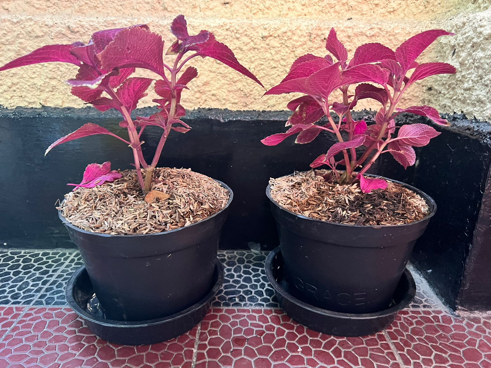
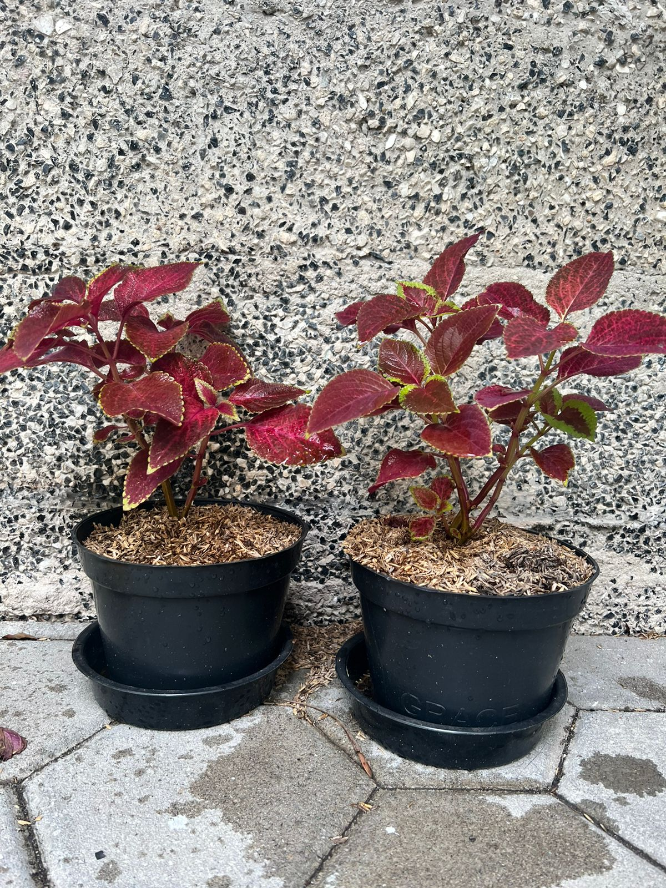

ABSTRAK
Kegiatan menanam dan pertanian masyarakat di Indonesia sangat tinggi akibat luasnya lahan di Indonesia serta iklim yang cocok. Namun, sebagian mereka masih
menggunakan pestisida yang sangat berbahaya. Baik itu bagi manusia, maupun fauna di sekitar tanaman. Tidak hanya berbahaya bagi petani dan fauna sekitar,
namun pestisida kimia dapat membahayakan warga lain yang ada di dekat lahan tersebut. Mereka juga memiliki potensi terpapar kanker serupa karena air dan produk
pertanian yang mereka konsumsi telah terkontaminasi oleh pestisida dan bahan kimia pertanian lainnya. Dari banyaknya kekurangan dan bahaya dari pestisida kimia,
kami pun ingin mencoba untuk mengatasi masalah ini dengan membuat pestisida alami, yang aman bagi lingkungan, manusia dan hewan.
Jenis penelitian yang kami gunakan adalah metode eksperimental kualitatif, yang mencari hubungan sebab akibat dengan memanipulasikan satu atau lebih variabel.
Dua tanaman A (menggunakan pestisida) dan tanaman B (tidak menggunakan pestisida) sudah diberikan perlakuan yang sama, kecuali pestisida selama 4 minggu. Dalam
metode eksperimental kualitatif, kedua tanaman tersebut akan diamati perubahannya dan perbedaannya akan menjawab apabila pestisida organik dapat meningkatkan kualitas
tanaman dengan aman. Jenis tanaman yang digunakan adalah coleus, dibeli di tempat yang sama, pada waktu yang sama.
Alat yang digunakan dalam percobaan ini adalah; sendok makan, wadah, botol spray, dan perasan jeruk. Kemudian bahan yang digunakan dalam percobaan ini adalah;
jeruk nipis, gula pasir, EM4 (larutan efektif mikroorganisme 4), dan air bersih. Pestisida dibuat dengan cara mencampur semua bahan dan difermentasikan selama 5
hari di tempat yang hangat.
Pada percobaan ini, terbukti bahwa pestisida tersebut bekerja, yang bisa dilihat dari bagaimana tanaman tanpa pestisida terlihat dimakan oleh hama sedangkan tidak
ada masalah di tanaman dengan pestisida. Namun, pestisida organik kurang kuat sehingga memerlukan waktu yang lama untuk melihat hasil yang signifikan.
Pestisida kimia meskipun efektif dan efisien berdampak sangat buruk pada lingkungan dan kesehatan makhluk hidup. Banyak komplikasi pestisida yang mampu membahayakan
kesehatan makhluk hidup. Penelitian lebih lanjut tentang pestisida organik buatan sendiri dapat membantu untuk melihat efektivitas pestisida organik pada tumbuhan.
Kata Kunci: Pestisida kimia, Pestisida organik, Dampak Lingkungan, Dampak Makhluk hidup, tindakan pencegahan, tindakan pengendalian.
Community planting and farming activities in Indonesia are very high due to the vast land area in Indonesia and the suitable climate. However, some of them still use very dangerous pesticides. Both for humans and fauna around the plant. Not only are they dangerous for farmers and the surrounding fauna, but chemical pesticides can harm other residents near the land. They also have the potential to be exposed to similar cancers because the water and agricultural products they consume have been contaminated by pesticides and other agricultural chemicals. Of the many disadvantages and dangers of chemical pesticides, we also want to try to overcome this problem by making natural pesticides, which are safe for the environment, humans and animals.
The type of research we use is a qualitative experimental method, which seeks causal relationships by manipulating one or more variables. Two plants A (using pesticides) and plant B (not using pesticides) have been given the same treatment, except for pesticides for 4 weeks. In the qualitative experimental method, the changes in the two plants will be observed and the difference will be answered if organic pesticides can safely improve the quality of the plants. The type of plant used is coleus, purchased at the same place, at the same time. The tools used in this experiment are; tablespoons, containers, spray bottles, and orange juice. Then the materials used in this experiment are; lime, granulated sugar, EM4 (effective microorganism 4 solution), and clean water. Pesticides are made by mixing all the ingredients and fermenting them for 5 days in a warm place.
In this experiment, it was proven that the pesticide worked, which can be seen from how the plants without the pesticides seemed to be eaten by the pests while there were no problems in the plants with the pesticides. However, organic pesticides are less potent so it takes a long time to see significant results.
Chemical pesticides, although they are effective and efficient, have a very bad impact on the environment and the health of living things. Many complications of pesticides can harm the health of living things. Further research on homemade organic pesticides can help to see the effectiveness of organic pesticides on plants

